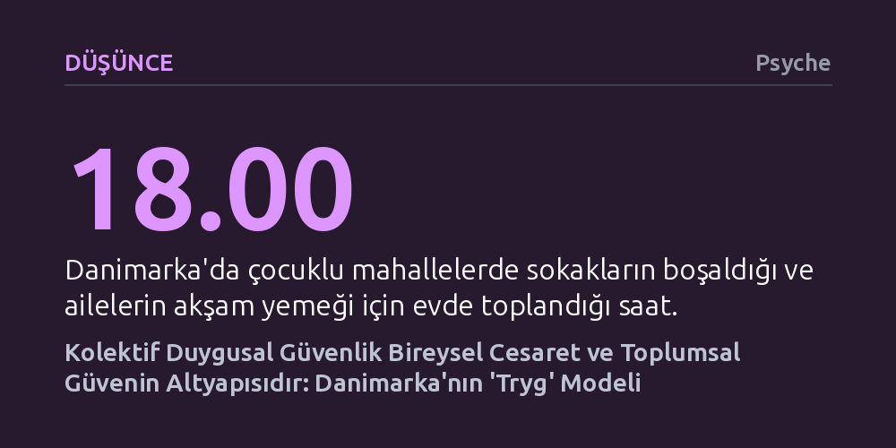

DUSUNCE · Psyche · 2026-10-20
Danimarka toplumunun yüksek güven ve inovasyon başarısı, duygusal güvenliğin ('tryg') bireysel bir his değil, kolektif olarak tasarlanan kurumsal bir altyapı olmasından kaynaklanıyor. Bireyler ancak ortak çabayla yaratılan bu huzur ortamında gardını indirip risk alabiliyor.
Güven ve cesaretin bireysel bir irade meselesi değil; kurallarla, öngörülebilirlikle ve ortak sorumlulukla inşa edilen duygusal bir zemin olduğunu gösteriyor.

Danimarka'ya dışarıdan gelen biri için gündelik hayatın işleyişi ilk bakışta modern toplum mantığına aykırı görünür. Kafelerin önünde pusetlerinde tek başına uyumaya bırakılan bebekler, trafiğin içinde okula yalnız bisiklet süren küçük çocuklar, sınavsız ve ödevsiz ilkokullar bu düzenin alışılagelmiş manzaralarıdır. Bireysel başarı kutlanmak yerine tevazuyla geçiştirilir; iş yerlerinde toplantılar aceleye getirilmeden bir önceki toplantıyı gözden geçirmek, birlikte yemek yemek ve bir sonrakini planlamakla geçer. Karar alma süreçleri can sıkıcı derecede yavaş işler ve hiçbir şeyde acele edilmez.
Rekabet ve hız üzerine kurulu çağdaş toplumların tersine işleyen bu pratikler, tesadüfi bir rehavetin değil, çok bilinçli bir toplumsal mutabakatın ürünüdür. Sistemin merkezinde Dancada "tryg" adı verilen duygu durumu yer alır. Genellikle diğer dillere yalnızca "güvenli" olarak tercüme edilen bu kavram, fiziksel bir tehlikenin yokluğundan çok daha fazlasını anlatır: Ebeveyninin kucağında dinlenen bir çocuğun duyumsadığı türden derin bir bedensel rahatlığı, tanıdık bir sıcaklığı ve içsel dinginliği ifade eder. Danimarkalılar bu hissin bireyde kendiliğinden doğmasını beklemez; onu ortaklaşa inşa edilmesi gereken kolektif bir sorumluluk olarak görür.
İnsan bedeni yeterince güvende hissetmediğinde istemsizce teyakkuz durumuna geçer. Beklentilerin belirsiz olduğu bir sınıfta, gergin bir toplantı odasında ya da yeni bir toplulukta zihin sürekli çevreyi tarar: Karşımdaki dost mu düşman mı? Kendimi savunmalı mıyım? Buradan uzaklaşmalı mıyım? Bu savunmacı uyanıklık hali dikkati daraltır; kişinin söylenenleri anlamak yerine olası tehditleri hesaplamasına yol açarak merakı, yaratıcılığı ve risk alma cesaretini felce uğratır.
Nörobilimci Stephen Porges'in çalışmaları, sinir sisteminin ancak gerçek bir emniyet algıladığında yatışabildiğini gösteriyor. Tehdit algısı söndüğünde algı genişler, merak canlanır, neşeli öğrenme ve sosyal katılım olanaklı hale gelir. Danimarka modelini özgün kılan unsur, bu yatışma sürecini geleneksel psikolojideki gibi bireysel bir terapi ya da iç huzur meselesi olarak görmemesidir. Danimarkalılar bireyin gardını indirebilmesi için sosyal ortamları, sınıfları ve iş yerlerini şeffaf, öngörülebilir ve dostane "çerçeveler" (rammer) üzerine kurarak bu zemini müştereken üretir.
Danimarka'daki bir seçim afişinde yer alan yalın slogan bu toplumsal felsefeyi özetler: "Güvende hisseden insanlar cesaret eder." Temel bir emniyet duygusu sağlandığında bireyler hata yapmaktan korkmaz, yeni fikirler dener ve toplumsal yaşama aktif biçimde katılır. Bu yaklaşım sadece soyut bir iyi niyet değil; çocuklu mahallelerde akşam saat 18.00'de herkesin aile sofrasına oturmasıyla tenhalaşan sokaklardan, anne ve babalara sunulan cömert ücretli ebeveyn izinlerine, ücretsiz sağlık ve eğitim haklarına kadar hayatın tüm katmanlarında somutlaşan bir kurumsal ağdır.
Kurallara uyulması, köpek dışkılarının toplanması ve düşürülen bir cüzdanın sahibine eksiksiz dönmesi gibi gündelik davranışlar, kimsenin sürprizlerle karşılaşmayacağı öngörülebilir bir alan yaratır. Bu özen altyapısı, liberal demokrasilerin sıkça başvurduğu soyut verimlilik ya da özgürlük söylemlerinin ötesine geçerek vatandaşların gündelik temaslarında hissettiği doğrudan bir iyilik haline dönüşür.
Bu denli yüksek bir güvenlik ve öngörülebilirlik arayışı belirli kırılganlıkları da beraberinde getirir. Herkesin kendini rahat hissetmesini şart koşan bir kültürde, alışılmadık veya beklenmedik durumlar hızla huzursuzluk yaratabilir. Ortak bir uzlaşıya varma zorunluluğu, karar süreçlerini katlanılması zor bir hantallığa sürükleyebilir; titizlik çoğu zaman eylemsizliğe ve tereddüde dönüşebilir. Değişimin ve belirsizliğin az deneyimlendiği bir toplumda hızlı krizlere karşı psikolojik dayanıklılık zayıflayabilir.
Ayrıca yerleşik çerçevenin dışına taşan düşünce veya davranışlar, tanıdık gelmediği için tedirgin edici bulunabilir ve topluluk dışına itilme riski doğurabilir. Dolayısıyla bu güvenlik arayışı bir yandan insanları özgürleştirirken diğer yandan kabul gören kalıpları daraltabilir. Buna rağmen Danimarka'nın yüksek inovasyon, güçlü ekonomi ve demokratik istikrar endekslerinde zirvelerde yer alması; sağlam bir güven ve özen altyapısının hızdan çok daha kalıcı bir toplumsal başarı ürettiğini gösteriyor.